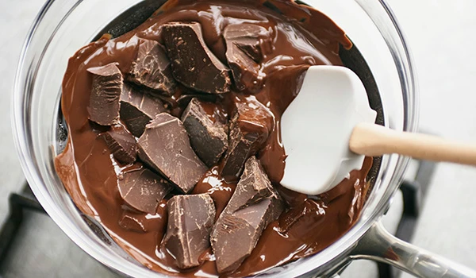
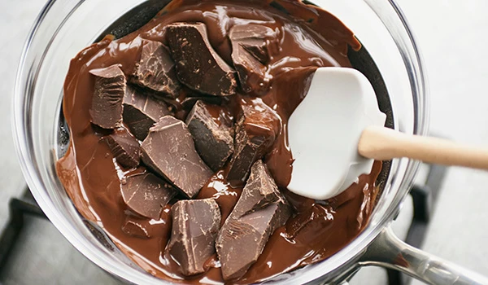

Recipes
Double Chocolate Cookies
Origin: Michigan
Source: Family Recipe
Category: Dessert

My daughter learned to make these cookies at a baking camp at Zingermanns and has tweaked the recipe to fit the taste buds of her siblings. They are extremely sugary so the salt helps to balance it. Note, these cookies are best eaten very quickly.
Recipe Ingredients
- Unsalted butter
- Granulated Sugar
- Packed light or dark brown sugar
- Large egg
- Pure vanilla extract
- Semi-sweet chocolate chunks (melted)
- All-purpose flour
- Natural unsweetened cocoa powder
- Baking soda
- Salt
- Semi-sweet chocolate chunks
Recipe Steps
- In a mixing bowl cream together the butter, granulated sugar, and brown sugar
- Add the egg and vanilla extract and beat well
- PAdd the melted chocolate
- In a separate bowl combine the flour, baking soda, cocoa powder and salt
- Combine the wet and dry ingredients
- Add the unmelted chocolate chunks
- Form 15 cookies and place on a baking sheet
- Cooke for 12 to 13 minutes at 350 degrees
Additional Food images
 


Spaghetti
Origin: Italian
Source: Own recipe
Category: Main Dish

Spaghetti is a long, thin, solid, cylindrical pasta. It is a staple food of traditional Italian cuisine
Recipe Ingredients
- Spaghetti noodles
- Pasta Sauce
- Cheese
Recipe Steps
- In a pan, add the pasta sauce and just enough water to cover the bottom of the pan. Bring the mixture to a boil
- Add the spaghetti noodles to the pan and cook according to the packaging instructions
- Once the noodles are cooked, move it into a plate and add cheese on top
Additional Food images


Avocado Toast
Origin: Sydney
Source: House recipe
Category: Breakfast
Full of good fats, dietary fiber, protein and vitamins, avocados are a healthy breakfast, lunch, or anytime snack. Our good 'n healthy avocado toast makes a great breakfast, lunch, or anytime snack.
Recipe Ingredients
- Bread
- Avocado
- Salt
- Pepper
- Olive oil
- Seasoning of your choice
Recipe Steps
- Put bread into toaster to toast it well
- Cut avocado into slices or mash it
- Put avocado on the bread
- Add olive oil, pepper, and salt
- Add other seasoning you like